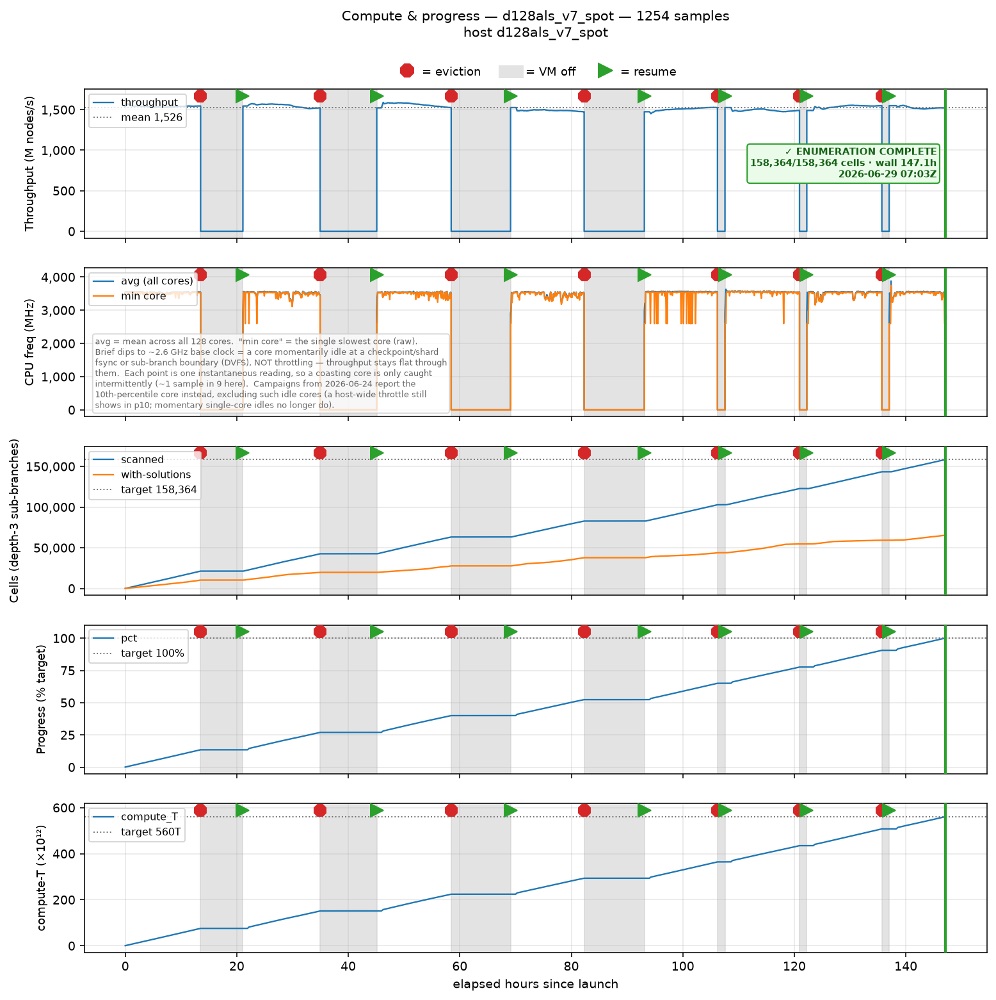
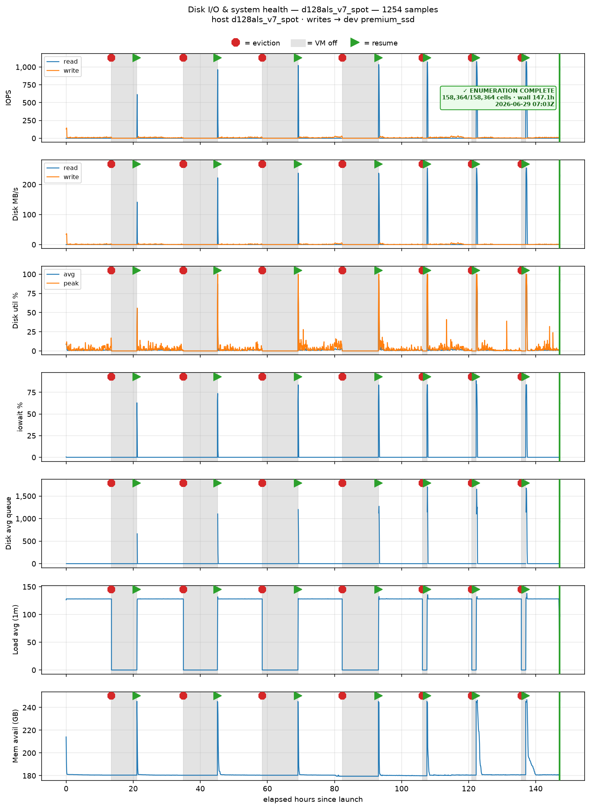
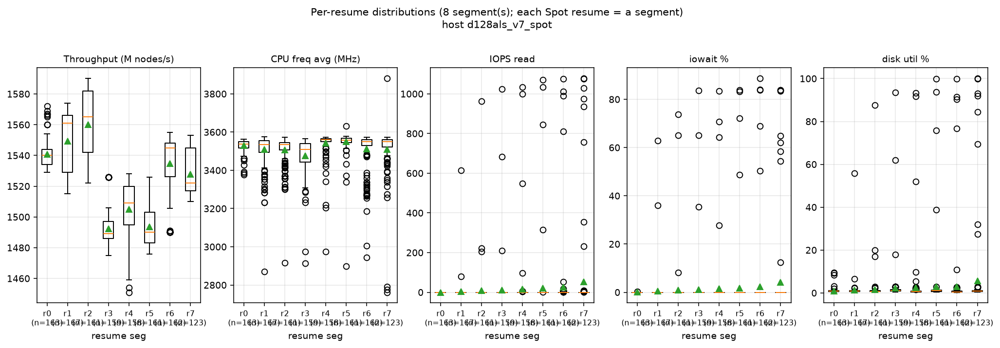
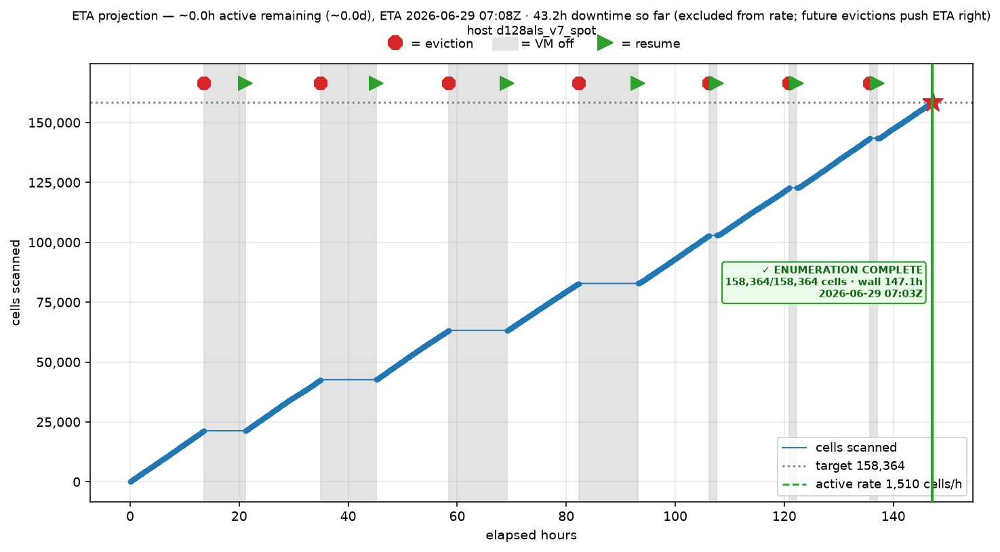
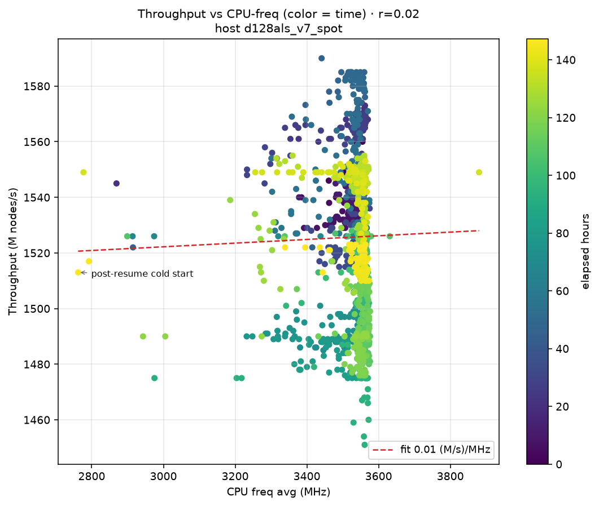
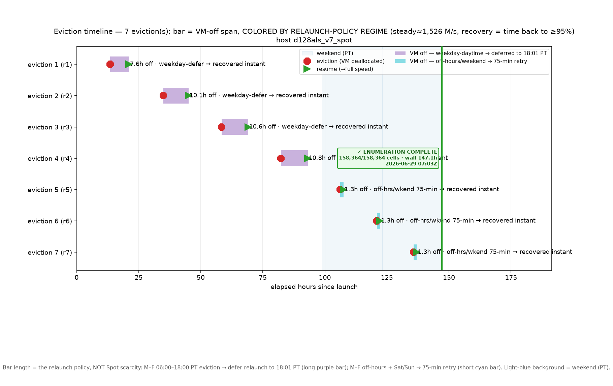

Throughput = the depth-3 DFS ENUMERATION RATE: millions of search-tree nodes visited per second, summed over all worker threads — this is search speed, NOT solutions/sec (most branches are pruned and valid orderings are rare). CPU freq avg/min across cores. Cells: a "cell" is one depth-3 sub-branch — the King Wen search space split by fixing the first three (pair, orientation) choices (pair1,orient1,pair2,orient2,pair3,orient3); there are 158,364 such cells, each enumerated independently, and "with-solutions" counts those that yielded ≥1 valid ordering (most yield none). Progress (% of the target node budget) and compute-T (×10¹² nodes cumulative) vs elapsed hours.

IOPS read/write, disk bandwidth MB/s read/write, disk utilisation avg + in-tick peak, iowait %, disk average queue depth, 1-min load average, and available memory (GB) vs elapsed hours.

Box-and-whisker of throughput, CPU-freq, IOPS-read, iowait, and disk-util grouped by resume segment (boot-id keyed; each Spot eviction-resume opens a segment). Reveals warmup/throttle per resume.

Cells scanned vs elapsed hours. The rate is fit over ACTIVE-ENUM hours (eviction downtime excluded) so a flat-held gap cannot deflate it; the green line projects from the latest sample to the 158,364-cell target (red star). Grey = downtime; ETA assumes no further evictions.

Scatter of throughput against CPU-freq, colored by elapsed time. A positive slope quantifies how host throttling (lower MHz) depresses throughput; clusters reveal per-host/per-resume regimes.

One horizontal bar per Spot eviction at its real time on the elapsed-hours axis, spanning the VM-off downtime and COLORED BY RELAUNCH-POLICY REGIME: purple = weekday-daytime eviction deferred to 18:01 PT (long by design), cyan = off-hours/weekend 75-min retry (short). Light-blue background marks weekends (PT). A green ▶ marks resume; label gives downtime + minutes to recover to ≥95% steady throughput ("instant" = first sample). Directly answers why some VM-off blocks are ~10h and others ~75min. Appears once evictions occur.
